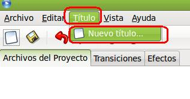
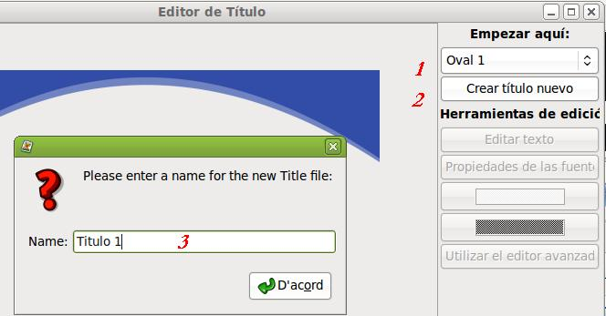

1.1. Aspectos Teóricos
Para iniciar el editor de títulos, debemos ir al Menú Título / Nuevo título.
Al iniciar el editor de títulos debemos elegir una plantilla (1), crear el nuevo título (2) y escribir como denominaremos a este título en nuestra edición de video (3).

La ventana principal del Editor de Títulos se compone de los siguientes apartados:
|
Id |
Componente |
Descripción |
|
1 |
Elegir plantilla |
Elegir una plantilla para usarla como título. |
|
2 |
Botón crear título |
Haga clic en este butón para crear una copia de la plantilla. |
|
3 |
Editar el texto |
Lanzar la ventana de edición de texto |
|
4 |
Cambiar la fuente |
Cambiar el tamaño y familia de la fuente. |
|
5 |
Color de fuente |
Cambiar el color de la fuente y el nivel alfa (transparencia). |
|
6 |
Color del fondo |
Cambiar el color del fondo y el nivel alfa (transparencia). |
|
7 |
Editor avanzado |
Editar este título SVG en el programa Inkscape. |
|
8 |
Previsualización del título |
Previsualiza su título tras cada edición, cambio de color o de fuente. |
En la creación de las plantillas se utiliza el programa de edición gráfica vectorial Inkscape.
Al finalizar de crear tu título, el mismo aparece, como un clip más, dentro del árbol de archivos.
Parte de la información expuesta en este apartado ha sido tomada de este manual
Si deseas un conocimiento más amplio de los apartados de la pantalla principal, haz clic aquí.
Para descubrir el uso de títulos animados, haz clic aquí.
Jo.R.C.A. 2004 - 2011

Edición de Audio y Video con Software Libre by José Ramón Cerdeira Alonso is licensed under a Creative Commons Reconocimiento-No comercial-Compartir bajo la misma licencia 3.0 España License